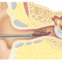

Foreign body
نکته1: در صورتی که جاندار است مانند حشرات ابتدا با لیدوکائین؛ بیحرکت میکنیم یعنی چند قطره لیدوکائین داخل کانال گوش میریزیم و سپس آن را خارج میکنیم. و با دستور زیر ترخیص میکنیم:
Rx:
1.Drop Polymyxin NH N=1 4drop q8h for 3day
نکته2: در صورتی که جسم سخت است با رینگ یا فورسپس خارج میکنیم. و دقت شود که به پرده گوش آسیب نرسد. اگر دیدید از توانتان خارجه به متخصص ارجاع بدین.
1️⃣ خراشیدگی کانال گوش
Cerumen impaction 2️⃣
3️⃣ هماتوم
4️⃣ اوتیت اکسترن
5️⃣ اوتیت مدیا
6️⃣ تومور
7️⃣ کلستئاتوم
8️⃣ پارگی پرده تیمپان
تصویری برای این نسخه موجود نیست.